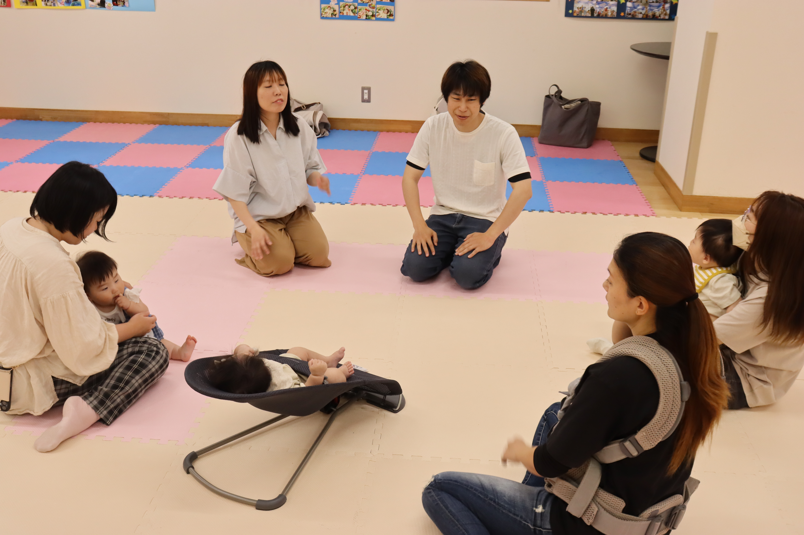

実際の相談会・研修会・地域活動の様子を紹介しています
2026.06
これまでの活動を発展させ、 継続的な子育て伴走支援として新たにスタートしました。
続きを読む →
2026.05.28
手づかみ食べ、感覚面、買い物中の困りごとなど、 日常生活に関するご相談をいただきました。
続きを読む →
2026.05.14
作業療法士を目指す学生の皆さんへ、 現場で大切なコミュニケーションについて講義を行いました。
続きを読む →
2026.05.02
サーキット活動を通して、 実践的に学ぶ研修を実施しました。
続きを読む →